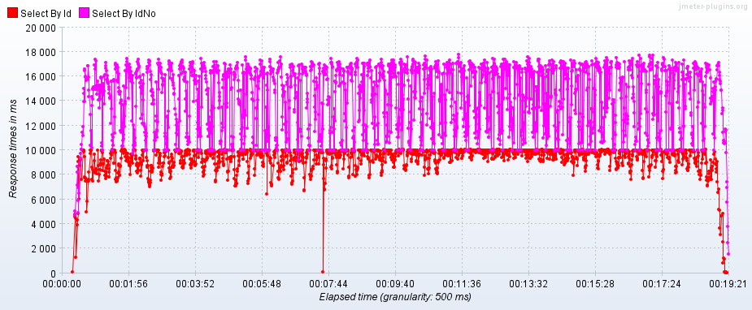
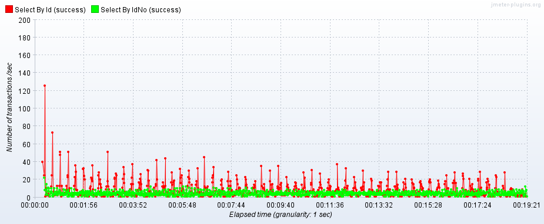

MySQL数据库如何调优？
作者：徐梦旗，发布于：2024-03-08 20:00，字数：989，预计阅读：3分钟
1. 数据库调优
1.1. 为什么需要数据库调优？
数据库调优是为了提高数据库的性能、降低接口的响应时间等。体现在以下几个指标：
- 响应时间（Response Time，RT）
- 每秒事务处理量（Transaction Per Second，TPS）
- 每秒查询处理量（Query Per Second，QPS）
1.2. 如何进行数据库压力测试？
可以使用JMeter工具进行数据库压力测试。下图是使用主键查询和使用全表扫描查询的响应时间（RT）对比，可以看到使用主键查询有更短的响应时间。
{kind=link}
下图是使用主键查询和使用全表扫描查询的每秒事务处理量（TPS）对比，可以看到使用主键查询有更高的每秒事务处理量。
{kind=link}
1.3. 数据库调优的手段有哪些？
数据库调优[1]有以下几种手段：
- 数据库层面：
- 修改数据库的配置，如设置合适的连接数、提高缓冲区的大小、开启慢查询日志等。
- 采用高可用方案、提升硬件配置。
- 表层面：
- 为表字段选择合适的类型。
- 创建合适的索引。
- 适当冗余字段，减少连接查询。
- SQL语句层面：
- 查看SQL语句的执行计划，优化SQL语句，避免全表扫描和索引失效。
- 优化SQL语句，如LIMIT优化、子查询优化、小表驱动大表等。
1.4. 数据库出现性能问题时如何排查？
- 开启慢查询日志，定位查询慢的SQL语句；
- 使用
EXPLAIN[2]命令看SQL语句的执行计划； - 优化SQL语句或者创建合适的索引。
2. 主从复制
2.1. 为什么需要主从复制？
- 用来备份主库，保证数据的安全。
- 支撑读写分离，提高性能。
- 支撑故障转移，提高可用性。
2.2. 主从复制的原理是什么？
由主库的IO线程生成binlog；由从库的IO线程生成中继日志relay log；最后由SQL线程重放SQL。
2.3. 主从复制的策略有哪些？
- 基于Pos主从复制。
- 基于GTID主从复制。
- 一主多从，一主多级从，互为主从。
- 半同步复制机制。
2.4. 如何解决主从复制延迟的问题？
主从复制延迟瓶颈在于磁盘IO和网络IO。
- 修改从数据库的刷盘策略提高性能，降低安全性。
- 多个从数据库，分散从库的读压力。
- 从库使用多线程重放SQL。
3. 读写分离
3.1. 为什么需要读写分离？
提高读的能力，分摊读压力。
3.2. 实现读写分离的工具有哪些？
- atlas。
- MyCat。
- MySQL Proxy。
- MySQL Router。
- Sharding Sphere。
4. 分库分表
4.1. 为何需要分库分表？
突破MySQL单库单表的瓶颈，提高数据库的性能。
4.2. 分库分表的策略有哪些？
切分与聚合。
- 垂直切分
- 垂直分库，按业务分库。
- 垂直分表，大表拆小表。
- 水平切分
- 水平分库。
- 水平分表。
4.3. 数据切片有哪些方法？
- 取模分片。
- 按范围分片。
- 按时间分片。
- 按枚举值分片。
- 自定义分片。
4.4. 分库分表的缺点有哪些？
- 分库，业务间需要通过接口交互。
- 整加事务管理难度。
4.5. 实现分库分表的工具有哪些？
- Sharding Sphere。
- MyCat。
5. 高可用集群
5.1. 为什么需要高可用集群？
完成自动的故障转移，提高系统的可用性。
5.2. 高可用集群方案有哪些问题？
- 主键冲突。
- 热备节点。
- 检查机制完善。
- 数据一致性保证。
5.3. 如何实现自动故障转移？
keepalived
6. 参考文档